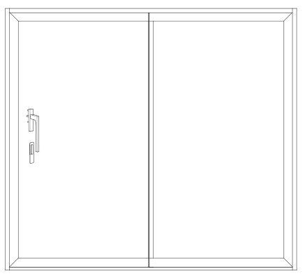
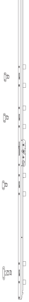

05KALDIR-SÜR SİSTEMLERİ

MONTAJ ŞEMASI
KALDIR-SÜR 16 MM SET
16 mmPROFİL KANALI · İÇERİDEN GÖRÜNÜŞ


SET İÇERİĞİİspanyolet boyları s. 98 · montaj detayları s. 101
1Kaldır-sür kolu
2İspanyolet
3Üst kilit karşılık
4Alt kilit karşılık
5Ön araba
6Bağlantı laması
7Arka araba
8Stoper
9Dolgu parçası
10Araba plastiği
05
BOSSYTeknik değişiklik hakkı saklıdır · bossy.com.tr
97